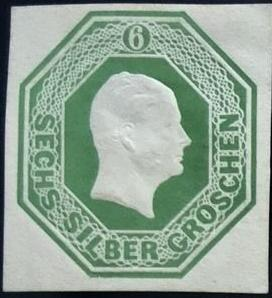
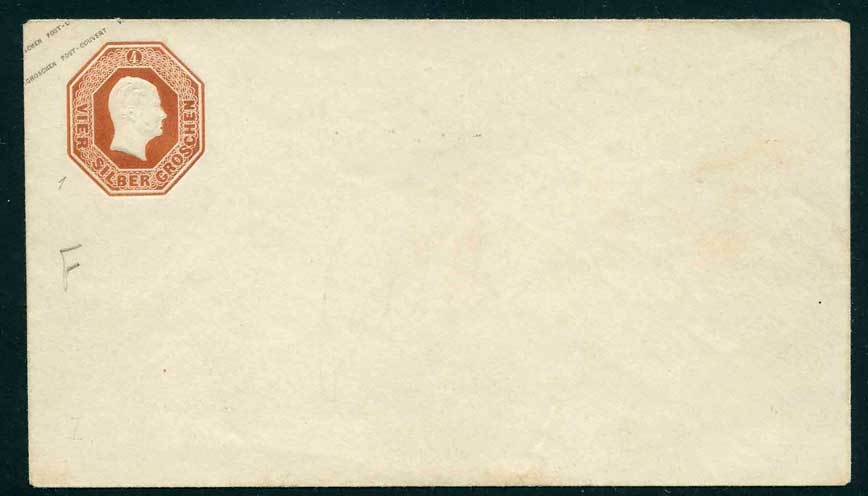
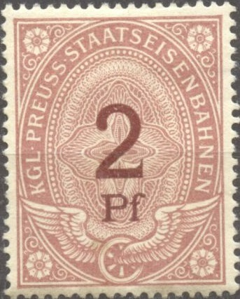
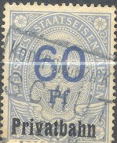
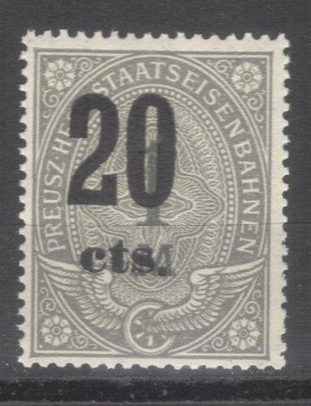

(Reduced size)
Return To Catalogue - Prussia stamps - Germany - Other German States
Note: on my website many of the
pictures can not be seen! They are of course present in the cd's;
contact me if you want to purchase the catalogue.
(Reduced size)

1 s red 2 s blue 3 s yellow 4 s brown 5 s violet 6 s green 7 s red
Some typical cancels:
(Reduced sizes)
I've been told that this 7 sgr is a forgery. Compare the position
of the background pattern with the genuine stamp shown above.

Two other Foure forgeries of envelopes.
Value in "SILB.GR." or "PFENNIGE"
(Reduced size)
3 p lilac 4 p green 6 p orange 1 s red 2 s blue 3 s brown Value in 'KREUZER'
1 k green 2 k orange 3 k red 6 k blue 9 k brown
These envelopes were also used by the North German Confederation, a stamps of the North German Confederation was applied on the envelope and then an overprint was applied. Here we see the envelope with the stamp removed again (by a stamp collector):
The 4 pfennige green design was issued for the 'Victoria - National - Invaliden - Stiftung'. It has the text 'Angelegenheit der Victoria - National - Invaliden - Stiftung' in two lines at the bottom left of the envelope.
The following values exist (all black background): 5 s blue, 10 s red, 15 s brown, 20 s green, 25 s yellow, 1 Th violet and 2 Th brown (all rouletted or perforated). In 1875 the currency was changed to 'Mark', the following values were then issued (all black background): 1/2 M blue, 1 M red, 1 1/2 M brown, 2 M green, 2 1/2 M yellow, 3 M violet and 6 M orange.
(Reduced size)
In the above design exist: 3 Th(aler) green and grey, 4 Th red and grey, 5 Th green and grey, 6 Th red and grey, 7 Th green and grey, 8 Th red and grey, 9 Th green and grey and 10 Th red and grey. These stamps exist both rouletted and perforated. In 1875 the currency was changed to 'Mark', the following values exist: 9 M grey and green, 10 M brown and red (1877), 12 M grey and red, 15 M grey and green, 15 M brown and red (1877), 18 M grey and red, 20 M brown and red (1877) 21 M grey and green, 24 M grey and red, 25 M brown and red (1877), 27 M grey and green 30 M grey and red and 30 M brown and red (1877).
(1877 issue, value in black)
(1881 issue, reduced size)
In the above issue exist: 1/2 M, 1 M, 1 1/2 M, 2 M, 2 1/2 M, 3 M, 3 1/2 M, 4 M, 4 1/2 M, 5 M and 6 M (all in red colour). Two types exist, one with the value surcharged in black (1877) and one with a larger value surcharged in red (1881).
In the above design exist 10 p red, 20 p blue, 50
p brown, 1 M orange, 1 1/2 M green and 2 M violet.
I have also seen similar stamps with the design slightly modified
(value in the center has been replaced by the tail of the eagle
and with '1M' or '50 Pf.' surcharged in black). They were issued
somewhere around 1920 (see images above).
This modified design also exist with further overprint: I have
seen the value '1M' on 1 M orange and '1 1/2M' on 1 1/2 M brown
with overprint 'C.G.H.S' for
use in Upper Silesia. I've also seen this modified design
with the overprint 'Livland' above and 'Estland'
below the value inscription (10 p red, 20 p blue, 40 p grey, 50 p
brown, 1 M orange and 1 1/2 M green).
(1896 issue, higher value, reduced size)
Higher values: 2 1/2 M, red, 3 M blue, 3 1/2 M brown, 4 M olive, 4 1/2 M green, 5 M violet, 5 M red and 6 M grey. I have seen the value 3 M with overprint 'C.G.H.S' for use in Upper Silesia. I have also seen the values 3 M blue and 5 M red with the overprint 'Saargebiet' for the Saar region.
(Reduced sizes)
In the above design exist: 10 M red, 12 M green,
15 M blue, 20 M brown, 25 M (light) brown, 50 M green, 100 M
lilac, 200 M red and 500 M violet (other values might exist).
I have also seen the values 25 M yellow, 100 M lilac and 500 M
violet with the overprint 'Saargebiet' for the Saar region.
(Reduced sizes)
I have also seen 1/2 M brown, 3 M brown, 5 M blue (?) and 20 M blue in the above design.
(Stamps issued during the inflation period)
(Later issue, overprinted in 'Goldmark')
With this 'Goldmark' overprint I have seen: 'EINHALB GM' (1/2), 'EINE GM' (1), 'Eineinhalb GM' (1 1/2), all in the colour orange, other values might exist.
I have also seen fiscal stamps of Prussia overprinted 'Ob. Ost. Verw.' (for use in occupied territories in Russia?).
First issued in 1907, inscription "GERICHTSKOSTEN MARKE PREUSZEN":
I have seen the following values: 1 M violet and
blue, 3 M green and red, 5 M brown and yellow, 10 M violet and
lilac, 20 M red and lilac, 50 M violet and green. I have also
seen the values 50 M , 100 M (orange and blue), 500 M (green and
lilac) and 1000 M (green and yellow) with the letters 'A' or 'N'
in the upper right corners.
Later issues exist with inscription "PREUSZEN
GERICHTSKOSTENMARKE", they are in a larger design:
See also: Germany railway stamps
("KGL. PREUSS. U. GROSSH. HESS STAATSEISENBAHNEN")
("KGL. PREUSS. EISENBAHNDIRECTION FRANKFURT A.M.")
"KGL. PREUSS STAATSEISENBAHNEN":

"KGL PREUSS STAATSEISENBAHNEN"; I have also seen the
values 5 p red, 30 p green, 40 p orange and 50 p lilac and 90 p
light brown.
"PREUSZ HESS STAATSEISENBAHNEN" (1897 onwards)
Railway stamps with inscription "PREUSZ.
HESS. STAATSEISENBAHNEN", I have seen the values: 5
p red, 10 p grey, 20 p orange, 25 p green, 30 p green, 40 p
orange, 50 p lilac, 60 p blue, 70 p brown, 80 p yellow, 90 p
brown, 1 M grey, 2 M green, 3 M blue (value black), 4 M brown
(value black), 5 M yellow (value red), 5 M yellow (value black),
10 M brown and black.
Furthermore I have seen the 40 p orange and 5 M orange with
overprint "Privatbahn" (=private
railway). I've also seen a 5 p red, a 25 p green and a 40 p
orange with slanting overprint 'Expreflgut'.
These stamps also exist with overprint "C.G.H.S."
(to be used in Upper Silesia): 5 p red,
10 p grey, 20 p brown, 30 p green, 40 p orange, 50 p lilac, 60 p
blue, 70 p brown, 80 p orange, 90 p lightbrown, 1 M grey, 2 M
green, 3 M blue, 4 M brown, 5 M orange and 10 M olive.
They also exist with overprint in 'cts.' or 'fr.'
to be used in the Saar district.
Here, these stamps with overprints:


Stamps with the inscription "PR. TELEGRAPH. MARKE" and a value in "Silb. gr." are telegraph stamps. The values 2 1/2 s, 5 s, 8 s, 10 s, 12 s and 15 s exist.
Reprint made around 1880 of an essay of 1855. They also exist
imperforate.
The next stamps with inscription "FREI DURCH ABLOSUNG Nr. 21" and also official stamps with added "21" were used in Prussia, more information can be found at Germany official stamps:
{kind=link}
{kind=link}
{kind=link}
{kind=link}
{kind=link}
{kind=link}